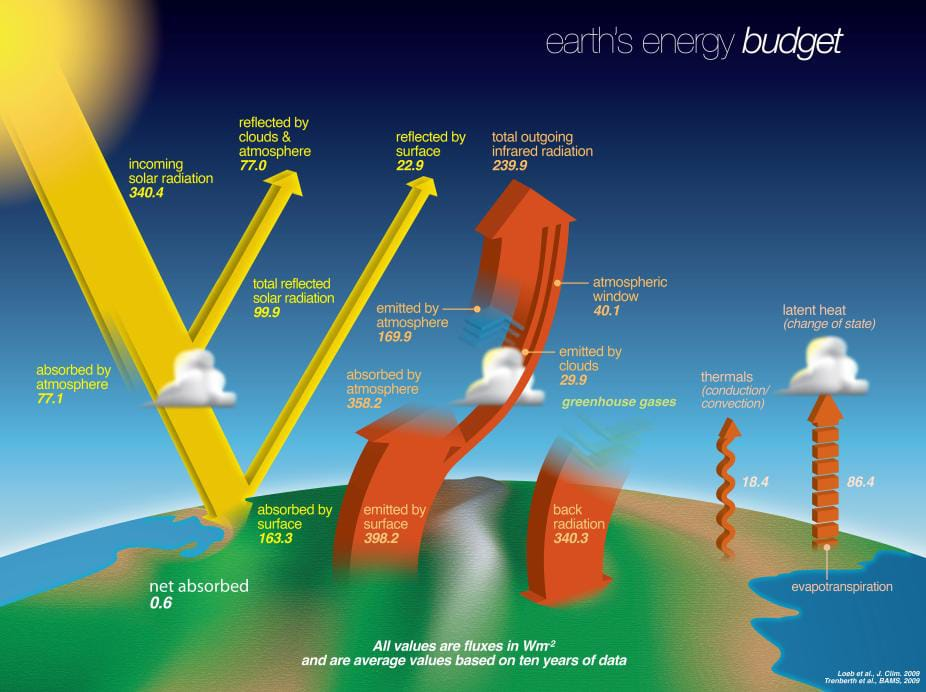

Earth System Science • B.Tech Physics Exhibition
Earth’s Climate & Reliable Prediction of Global Warming
How climate science explains the past, models the present, and projects the future of Earth’s temperature.
Weather changes quickly. Climate changes over time.
Weather describes atmospheric conditions over short periods. Climate describes long-term patterns and averages, usually considered over several decades.
What is happening now?
Rain, wind, clouds, temperature, and storms can change from minutes to days and weeks.
What is typical over time?
Climate describes patterns in temperature, rainfall, humidity, and other conditions over a long period, commonly 30 years or more.
One unusual day does not define a climate trend. Climate science looks for patterns across longer periods.
Source: NASA Science, “What’s the difference between weather and climate?”
Earth’s climate is a connected system.
Climate emerges from interactions among the atmosphere, ocean, land, ice, and living organisms. Energy and matter move continuously between these parts of the Earth system.
Click one of the five buttons to learn about that part of Earth’s climate system.
Because these components interact, a change in one part of the system can influence many other parts.
Source: NASA Science, climate system observations and Earth system components.
Earth’s temperature depends on an energy balance.
Sunlight supplies energy to Earth. The surface releases energy as infrared radiation. Greenhouse gases absorb some of this infrared radiation and re-emit energy, including back toward the surface.
Conceptual illustration — not to scale. No measured values shown.
Solar radiation enters the Earth system. Some is reflected by clouds, ice, and bright surfaces, while the rest is absorbed.
Earth emits infrared radiation. Greenhouse gases absorb and re-emit some of this energy, influencing how easily heat escapes to space.
The greenhouse effect is a natural physical process. Increasing the concentration of greenhouse gases changes the energy balance.
Source: NobelPrize.org, The Nobel Prize in Physics 2021 — Popular science.
Climate can change naturally — and human activity can change it rapidly.
Earth’s climate has changed naturally throughout its history. Today, scientists compare natural influences with human-caused influences using physical understanding, observations, and climate-model experiments.
Processes that operate without human activity
- Changes in solar energy
- Volcanic eruptions
- Orbital changes
- Internal ocean–atmosphere variability
Natural factors can affect climate, but their timing and physical fingerprints must be compared with observations.
Changes caused by human activity
- Burning coal, oil, and gas
- Land-use and land-cover change
- Industrial greenhouse-gas emissions
- Changes in atmospheric composition
Human activities have increased the concentration of greenhouse gases in the atmosphere, changing Earth’s energy balance.
Conceptual map — drivers act through different physical processes. Diagram does not imply equal strength.
Click the button above to explore how scientists approach the question of climate attribution.
Cause is established by multiple lines of evidence, not by a single graph.
Source: IPCC AR6, Summary for Policymakers, Section A.
Source: NASA Science, Evidence of Climate Change.
Evidence comes from many independent measurements.
Global warming is not inferred from one measurement alone. Scientists compare observations from the atmosphere, ocean, cryosphere, land, and living systems.
EXPLORE THE EVIDENCE
Five connected indicators tell one scientific story.
Select an indicator to see what scientists measure, why it matters, and how it connects to the climate system.
Air composition and temperature are changing.
Scientists measure atmospheric composition and temperature to understand how energy and greenhouse gases are changing in the climate system.
- Greenhouse-gas concentrations
- Air temperature
- Water vapour
- Atmospheric circulation
The atmosphere controls how radiation and heat move through the climate system. Changes in greenhouse gases affect the balance between incoming and outgoing energy.
Source: NASA Earthdata, Climate Indicators; NASA Science, Evidence of Climate Change.
Conceptual diagram — not measured data.
The ocean stores and transports heat.
The ocean absorbs a large share of the excess energy entering the climate system and transports heat through currents.
- Ocean temperature
- Ocean heat content
- Sea-surface temperature
- Ocean circulation
Water has a high heat capacity, so the ocean can store large amounts of energy. This influences atmospheric warming, weather, and sea level.
Source: NASA Science, Earth Indicators; NASA Science, Evidence of Climate Change.
Conceptual diagram — not measured data.
Ice and snow respond to a warming climate.
Scientists monitor glaciers, ice sheets, snow cover, and sea ice using ground observations, aircraft, satellites, and other methods.
- Glacier mass
- Ice-sheet mass
- Snow cover
- Sea-ice extent and thickness
Bright ice and snow reflect sunlight. When ice is lost, darker land or ocean can absorb more solar energy.
Source: NASA Science, Evidence of Climate Change; NASA Earthdata, Climate Indicators.
Conceptual diagram — not measured data.
Sea level responds to warming in more than one way.
Global mean sea level is influenced by the expansion of warming seawater and by water added from melting land ice.
- Satellite altimetry
- Tide-gauge records
- Ocean temperature
- Glacier and ice-sheet mass
Sea-level observations combine information from the ocean, atmosphere, glaciers, and ice sheets.
Source: NASA Earth Indicators; IPCC AR6 Summary for Policymakers.
Conceptual diagram — not measured data.
Living systems respond to climate conditions.
Plants, animals, and microorganisms interact with temperature, water, carbon, and seasonal cycles.
- Vegetation activity
- Carbon exchange
- Growing-season timing
- Species and ecosystem responses
Ecosystems exchange carbon and water with the atmosphere and can respond to changes in temperature, precipitation, and seasonal timing.
Source: NASA Earthdata, Climate Indicators.
Conceptual diagram — not measured data.
Global Surface Temperature Anomaly
NASA GISTEMP v4The graph uses NASA GISTEMP v4 global annual Land-Ocean Temperature Index. Anomalies are in °C relative to the 1951–1980 average.
The local data file could not be loaded in this browser. Use Kiro Preview or a local server to view the interactive graph.
Windows: py -m http.server 8000 |
macOS/Linux: python3 -m http.server 8000 |
Then open: http://localhost:8000
| Year | Anomaly (°C, rel. 1951–1980) |
|---|
Selected representative years. Full dataset: 1880–2025 (146 observations).
An anomaly is a difference from a reference-period average. This graph does not show absolute global temperature and does not provide a forecast.
- Dataset
- NASA GISTEMP v4
- Variable
- Global surface temperature anomaly
- Units
- Degrees Celsius
- Baseline
- 1951–1980
- Period
- 1880–2025 (146 annual observations)
- Status
- DATA LOADED
A temperature anomaly is a difference from a reference-period average. It is not the absolute temperature of the planet.
Source: NASA GISS Surface Temperature Analysis, GISTEMP v4.
Credit: NASA’s Scientific Visualization Studio. Source: svs.gsfc.nasa.gov/5057
Source: IPCC AR6, Summary for Policymakers, Section A.1.
Source: NASA Science, Evidence of Climate Change.
Source: NASA Earthdata, Climate Indicators.
Climate models turn physical laws into experiments.
A climate model is a mathematical representation of important processes in the climate system. It uses equations, observations, and numerical methods to explore how the atmosphere, ocean, land, ice, and biosphere interact.
Measurements describe the current and past climate system.
Equations describe motion, radiation, heat, water, and carbon.
The planet is represented as a three-dimensional set of model cells.
Atmosphere, ocean, land, and ice exchange energy, water, and momentum.
A computer calculates how the system evolves through time.
Simulations are evaluated against observations and used to explore conditional future pathways.
What does reliable prediction mean?
Reliable climate prediction does not mean predicting the exact weather on a particular day decades from now. It means estimating large-scale, long-term climate responses under clearly stated assumptions.
A statement about an expected future outcome
Prediction is often used for a future outcome that is expected under a particular set of conditions.
A conditional future pathway
A climate projection depends on assumptions about future greenhouse-gas emissions, land use, and other influences.
A range of possible outcomes
Uncertainty can come from natural variability, imperfect observations, model structure, and unknown future human choices.
Why models can be useful
Different models may produce different details, while still agreeing on important large-scale physical responses.

Credit: NASA/JPL-Caltech. Source: NASA Science — The Greenhouse Effect, Simplified.
Credit: NASA/JPL-Caltech. Source: NASA Science — The Greenhouse Effect, Simplified.
Source: NOAA Climate.gov, Climate Models.
Source: IPCC AR6 Working Group I, Technical Summary.
Syukuro Manabe made the atmosphere computable.
He connected radiation balance, vertical heat transport, atmospheric composition, and surface temperature.
Syukuro Manabe
- Role
- Climate physicist and pioneer of physical climate modelling
- Prize
- Half of the 2021 Nobel Prize in Physics
For the physical modelling of Earth’s climate, quantifying variability and reliably predicting global warming.
Manabe’s work helped establish how mathematical models can represent the physical processes that control Earth’s climate.
From atmospheric columns to coupled climate models
Radiation and vertical transport
Manabe led the development of physical climate models and investigated the interaction between radiation balance and the vertical transport of air masses.
Radiative-convective atmosphere
Manabe and Richard Wetherald developed a one-dimensional, single-column model of the atmosphere in radiative-convective equilibrium. The work included the role of water-vapour feedback.
Coupled ocean–atmosphere simulation
Manabe and Kirk Bryan published simulations using a coupled ocean–atmosphere model, combining atmospheric and ocean circulation.
Nobel recognition
Manabe shared half of the 2021 Nobel Prize in Physics with Klaus Hasselmann for contributions to the physical modelling of Earth’s climate, quantifying variability, and reliably predicting global warming.
How Manabe’s model connects physics
Conceptual model — simplified, not to scale.The climate system receives energy from the Sun and emits infrared radiation.
Manabe’s central contribution
He showed that physical climate models could connect atmospheric composition with surface temperature and could be used to investigate the response of the climate system.
Why it matters
Modern climate models are much more detailed than early models, but the central strategy remains physical: represent important processes, compare simulations with observations, and test how the system responds to changes.
Early models were simplified compared with modern Earth-system models. Simplification does not make them useless; it makes the physical question clearer, provided their assumptions and limits are stated.
Source: Nobel Prize 2021 Laureates — Nobel Prize Outreach.
Credit: Nobel Prize Outreach.
Source: NobelPrize.org, The Nobel Prize in Physics 2021 — Popular science.
Source: NobelPrize.org, Syukuro Manabe — Biographical.
Source: NOAA GFDL, Syukuro Manabe biography and scientific contributions.
Klaus Hasselmann made long-term climate signals visible.
He connected rapidly changing weather with slowly changing climate.
Klaus Hasselmann
- Role
- Climate scientist and developer of stochastic climate methods
- Prize
- Half of the 2021 Nobel Prize in Physics
For the physical modelling of Earth’s climate, quantifying variability and reliably predicting global warming.
Hasselmann developed ways to understand how chaotic weather variability affects climate and how characteristic signals can be identified in observations.
From weather variability to climate fingerprints
Weather and climate connection
Hasselmann developed approaches linking rapidly changing weather with slower climate evolution.
Weather as noise
Hasselmann demonstrated how chaotically changing weather phenomena can be described as rapidly changing noise in climate analysis.
Signal fingerprints
He developed methods for identifying characteristic signals associated with natural phenomena and human activities.
Nobel recognition
Hasselmann shared half of the 2021 Nobel Prize in Physics with Syukuro Manabe for contributions to climate modelling, climate variability, and reliable prediction.
Signal versus noise
Conceptual demonstration — not measured data.Illustration only: changing the slider changes visual noise amplitude, not a real climate record.
Signal fingerprints
Changes in solar radiation can leave a physically distinctive influence on the climate system.
Why Hasselmann’s work matters
Climate observations contain both short-term variability and longer-term signals. Hasselmann’s methods helped scientists study how signals can be identified within a noisy, changing system.
Reliable climate science does not require weather to be predictable for decades. It requires long-term signals to be distinguishable from short-term variability.
Signal detection depends on observations, physical understanding, statistical methods, and assumptions. A conceptual visual cannot replace a formal attribution study.
Source: Nobel Prize 2021 Laureates — Nobel Prize Outreach.
Credit: © Johan Jarnestad / The Royal Swedish Academy of Sciences.
Source: NobelPrize.org, The Nobel Prize in Physics 2021 — Popular science.
Source: NobelPrize.org, Press release for the 2021 Nobel Prize in Physics.
Source: NobelPrize.org, Klaus Hasselmann — Biographical.
Climate response includes feedbacks, uncertainty, and choices.
An initial change in Earth’s energy balance can trigger processes that amplify or reduce the response. Future climate projections also depend on natural variability, model limitations, and future human decisions.
Climate feedbacks
Snow and ice reflect sunlight. If bright surfaces decline, darker land or ocean can absorb more solar energy, which can contribute to additional warming.
Note: Positive feedback amplifies an initial change; negative feedback reduces an initial change. These terms do not mean beneficial or harmful.
Where does uncertainty come from?
The climate system varies naturally over short and medium timescales.
Measurements have limits in coverage, length, and precision.
Models represent a complex system using mathematical approximations.
Future emissions, land use, technology, and policies are not known in advance.
Scenarios are conditional pathways, not forecasts.
Each pathway is a conditional experiment. It asks: what climate response would be possible if these assumptions about future drivers were followed?
Modelled scenarios and pathways are used to explore possible future emissions and climate responses. They are not predictions or forecasts.
Source: IPCC AR6 Working Group I, Technical Summary.
Source: IPCC AR6 Synthesis Report, Summary for Policymakers.
Source: NASA Science, Global Warming.
Reliable climate prediction is built from physics, evidence, and careful reasoning.
Earth’s climate is a complex system, but complexity does not make it unknowable. Physical laws, observations, models, and statistical methods allow scientists to identify long-term climate signals and evaluate future possibilities.
Earth’s energy balance and atmospheric composition provide the physical foundation for understanding warming.
Independent measurements reveal changes across the atmosphere, ocean, ice, sea level, and ecosystems.
Climate models translate physical understanding into simulations and conditional projections.
Uncertainty is quantified, sources are examined, and conclusions are compared with evidence.
Why Manabe and Hasselmann matter
Manabe helped establish physical climate modelling and showed how atmospheric composition is connected to temperature. Hasselmann helped connect short-term weather variability with long-term climate signals and methods of attribution.
Reliable prediction does not mean perfect certainty. It means that the evidence, physics, methods, assumptions, and uncertainty are made clear.
References
- Nobel Prize Outreach. “The Nobel Prize in Physics 2021 — Popular information.” nobelprize.org/prizes/physics/2021/popular-information/
- NASA Science. “Evidence of Climate Change.” science.nasa.gov/climate-change/evidence/
- NASA Earthdata. “Climate Indicators.” earthdata.nasa.gov/topics/climate-indicators
- NASA GISS. “GISS Surface Temperature Analysis, GISTEMP v4.” data.giss.nasa.gov/gistemp/
- NOAA Climate.gov. “Climate Models.” climate.gov/maps-data/climate-data-primer/predicting-climate/climate-models
- IPCC. “AR6 Working Group I Summary for Policymakers.” ipcc.ch/report/ar6/wg1/chapter/summary-for-policymakers/
- IPCC. “AR6 Synthesis Report Summary for Policymakers.” ipcc.ch/report/ar6/syr/summary-for-policymakers/
Sources will be checked again when the final datasets, images, and video credits are added.
Offline classroom presentation • Scientific content and media
must be verified before final submission. •
Media credits and usage conditions are listed in
docs/rights-checklist.md.
Final rights verification is the presenter’s responsibility.
Media review and source management
Approved media appears in its scientific topic section above.
This panel is for administration. It is hidden in presentation mode.
To show it: press Shift+R or add ?review=1 to the URL.
Approved and placed
Not shown in main presentation
- File
- extreme-weather-events.jpg
- Topic
- Weather variability (confirmed by inspection)
- Suggested target
- Slide 9 — Hasselmann (weather as noise)
- Source
- PENDING — fill in source URL before placing
- Credit
- PENDING
- Alt text
- PENDING
Not shown. Add source, credit, and alt text, then update manifest and re-approve.
- File
- climate-change.mp4
- Duration
- 11.5 s (within 20-second guideline)
- Dimensions
- 864 × 496 px
- Topic
- PENDING — watch the video and confirm topic
- Target slide
- PENDING
- Source
- PENDING
- Credit
- PENDING
Not shown. Confirm topic and slide, then add source, credit, and caption before placing.
All media files are stored in assets/images/ and assets/videos/.
See data/media-manifest.json and docs/media-credits.md for full inspection notes.
Media credits and usage conditions are listed in docs/rights-checklist.md.
Final rights verification is the presenter’s responsibility.